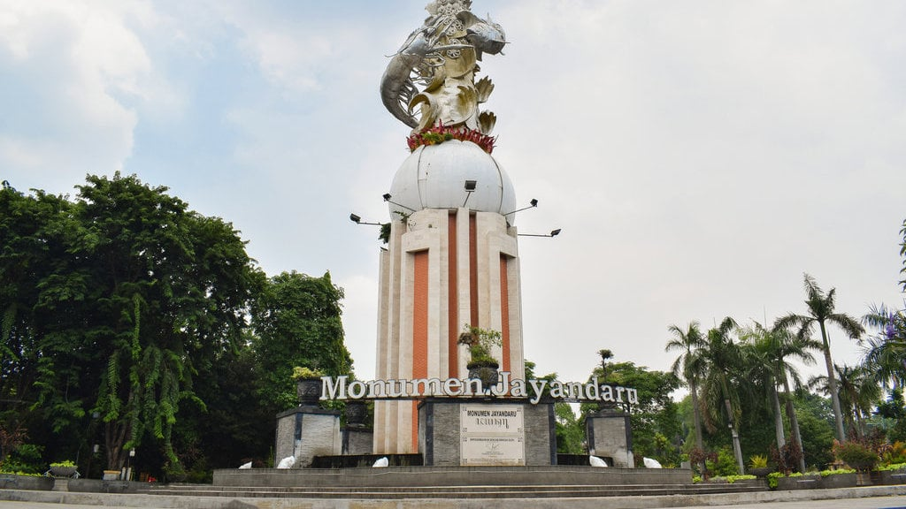
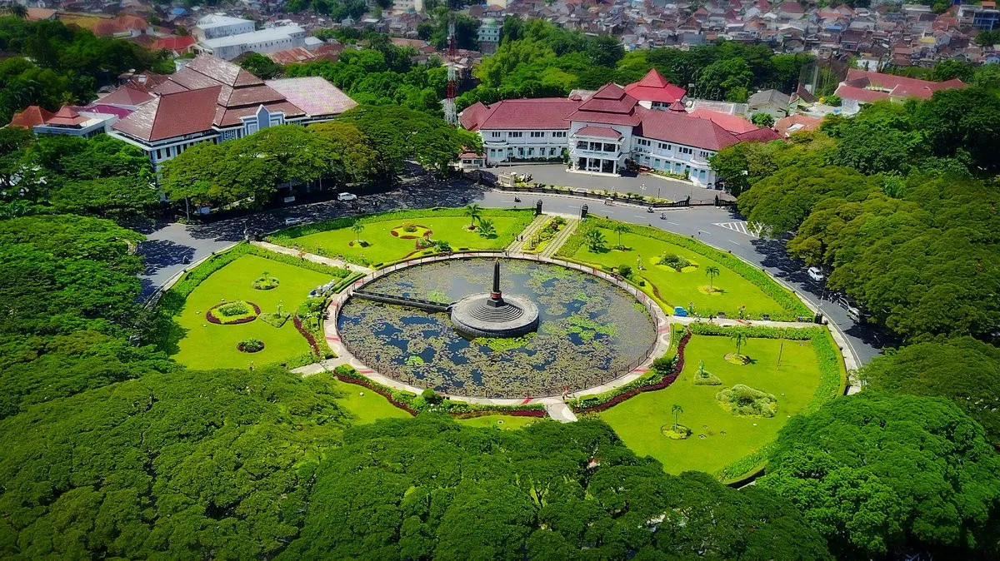
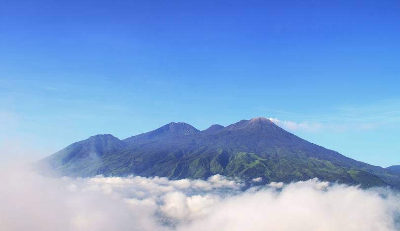
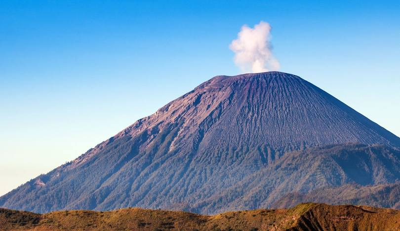
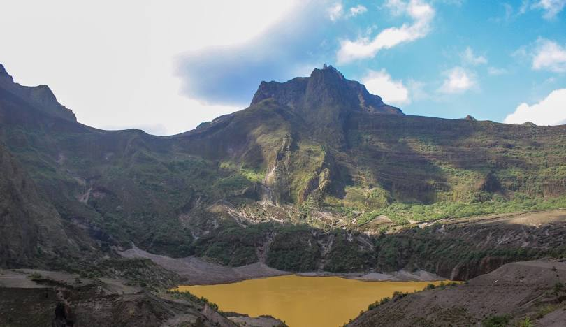

Kota Surabaya

Kota Surabaya adalah ibu kota Provinsi Jawa Timur, Indonesia.
Kota Sidoarjo
Kabupaten Sidoarjo adalah sebuah kabupaten di Provinsi Jawa Timur, Indonesia.
Kota Malang
Kota Malang adalah sebuah kota yang terletak di Provinsi Jawa Timur, Indonesia.
Kota Blitar

Kota Blitar merupakan sebuah kota yang terletak di bagian Selatan provinsi Jawa Timur, Indonesia.
Gunung Arjuno
Gunung Arjuno adalah sebuah gunung berapi kerucut di Jawa Timur, Indonesia dengan ketinggian 3.339 m dpl.
Gunung Sumeru
Gunung Semeru atau Gunung Meru adalah sebuah gunung berapi kerucut di Jawa Timur, Indonesia.
Gunung Kelud
Gunung Kelud adalah sebuah gunung berapi di Jawa Timur yang hingga sekarang tergolong aktif.
Gunung Bromo

Gunung Bromo atau dalam bahasa Tengger dieja "Brama", juga disebut Kaldera Tengger, adalah sebuah gunung berapi aktif di Jawa Timur, Indonesia.